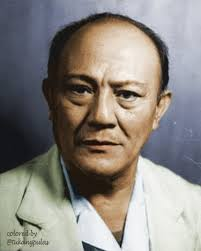

Gerungan Saul Samuel Jacob Ratulangi
Pahlawan Nasional Indonesia
s
Biodata Lengkap
- Nama lengkap: Gerungan Saul Samuel Jacob Ratulangi
- Nama terkenal: Sam Ratulangi
- Lahir: 5 November 1890
- Tempat lahir: Tondano, Sulawesi Utara
- Wafat: 30 Juni 1949
- Gelar: Pahlawan Nasional Indonesia
Masa Kecil dan Pendidikan
Sam Ratulangi dikenal sangat pintar sejak kecil. Ia rajin belajar dan memiliki cita-cita besar untuk
memajukan bangsa Indonesia. Beliau menempuh pendidikan hingga ke luar negeri dan berhasil memperoleh
gelar doktor di bidang matematika dan ilmu pengetahuan. Karena kecerdasannya, Sam Ratulangi dihormati
banyak orang.
Perjuangan untuk Indonesia
Sam Ratulangi aktif dalam organisasi kebangsaan, pendidikan rakyat, dan politik Indonesia.
Beliau memperjuangkan kemerdekaan Indonesia terutama di wilayah Indonesia Timur.
Menjadi Gubernur Pertama Sulawesi
Setelah Indonesia merdeka, Sam Ratulangi dipercaya menjadi gubernur pertama Sulawesi.
Beliau berusaha menyatukan rakyat, mempertahankan kemerdekaan, dan meningkatkan pendidikan.
Bidang Pendidikan
Sam Ratulangi percaya bahwa bangsa yang maju adalah bangsa yang berpendidikan.
Karena itu beliau membantu perkembangan sekolah, mengajarkan semangat belajar,
dan mendorong generasi muda menjadi pintar.
Alasan Wajahnya Ada di Uang Rp20.000
Pemerintah Indonesia memilih Sam Ratulangi sebagai gambar pada uang Rp20.000 karena jasanya besar
bagi Indonesia, sebagai tokoh pendidikan dan perjuangan, serta menginspirasi rakyat Indonesia.
Sifat Teladan Sam Ratulangi
- Pintar
- Rajin belajar
- Nasionalis
- Cinta tanah air
- Peduli pendidikan
- Berani memperjuangkan bangsa